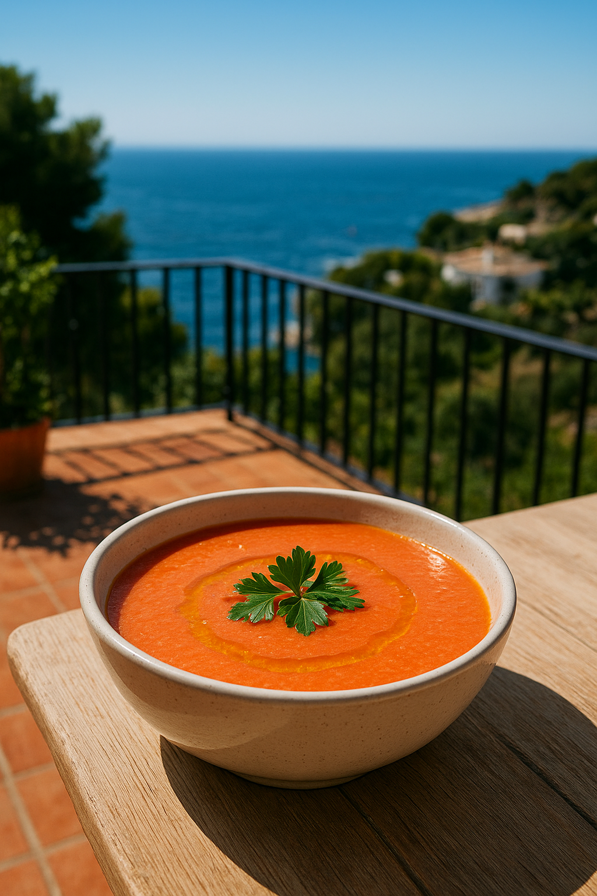

Receta de Gazpacho
Pues hoy vamos a ver que necistamos y que como procedemos para realizar una receta muy veraniega, propia de la gastronomía andaluza y que si te gusta el Tomate será indispensable en tu dieta semanal
Lista de la compra
- Tomate pera: 1 kg
- Pimiento verde italiano: 1
- Pepino: 1
- Dientes de ajo: 2
- Aceite de oliva virgen extra: 50 ml
- Pan de hogaza duro: 50 g
- Agua: 250 ml
- Sal: 5 g
- Vinagre de Jerez: 30 m
Pasos a seguir
- Trocea las verduras.
- Añade aceite, agua y vinagre.
- Añadele el pan en desmigajado.
- Trituralo ahora todo con la thermomix o batidora.
- Pasa por colador fino para eliminar pieles y semillas y que tenga una textura mas fina.
- Enfría en la nevera al menos 1-2 horas.
- Sirvelo en un bol o plato al gusto, y añadele un chorrito superficial de aceite de oliva virgen extra, y una pizca de perejil para darle sabor.
